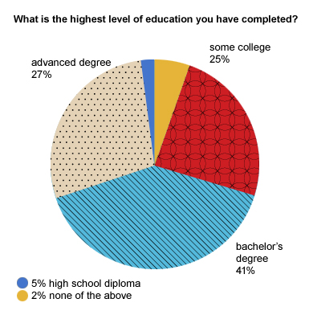
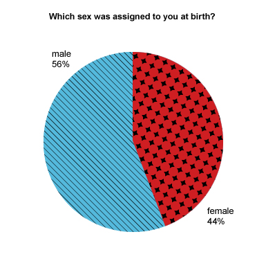
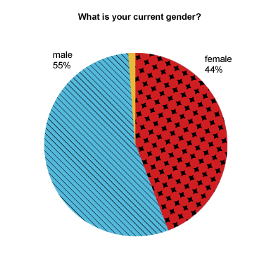
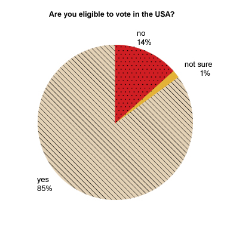
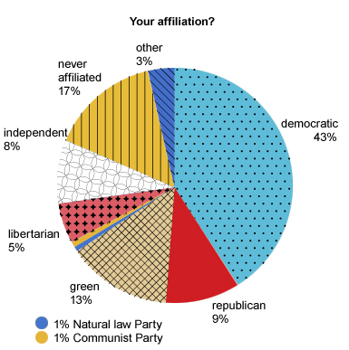
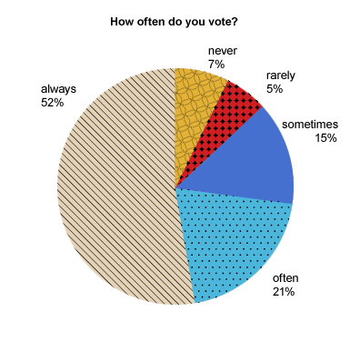
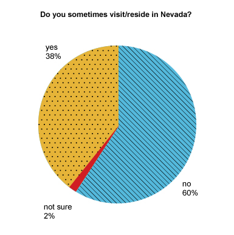
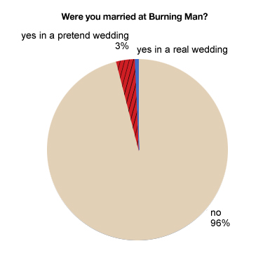
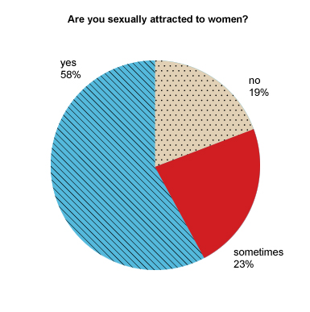
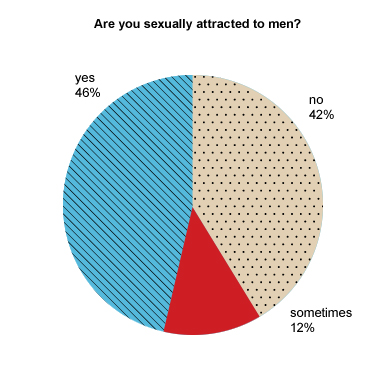

2008 After Burn Report
Welcome
While BRC Census has been producing reports since 2002, it is hard to compare recent data with reports from earlier years (before 2013) because of important differences in methodology, from a convenience sample of self-selected Census takers on-playa to a weighted online survey conducted after the Man burns.
About You
Artist
Do you consider yourself to be an artist?

Race and Ethnicity
Do you consider yourself to be a person of color?

Do you consider yourself to be white?

Education
What is the highest level of education you have completed?

Sex and Gender
Which sex was assigned to you at birth?

What is your current gender?

Voting and Politics
Are you eligible to vote in the USA?

Your affiliation?

How often do you vote?

Spirituality
Is spirituality important to you?

At Burning Man
Nevada
Do you sometimes visit/reside in Nevada?

Volunteering
Did you volunteer with Burning Man outside of BRC last year?

Returning
Do you plan on returning to Burning Man?

Relationships and Home
Marriage
Are you married?

Were you married at Burning Man?

Sexual Attraction
Are you sexually attracted to women?

Are you sexually attracted to men?

Playa Romance
Have you ever embarked on a significant romantic relationship with someone you met on the playa?

Residence
Which best describes the area where you reside?

Home Ownership
Do you own a home?

Socializing
Do you regularly socialize with burners?